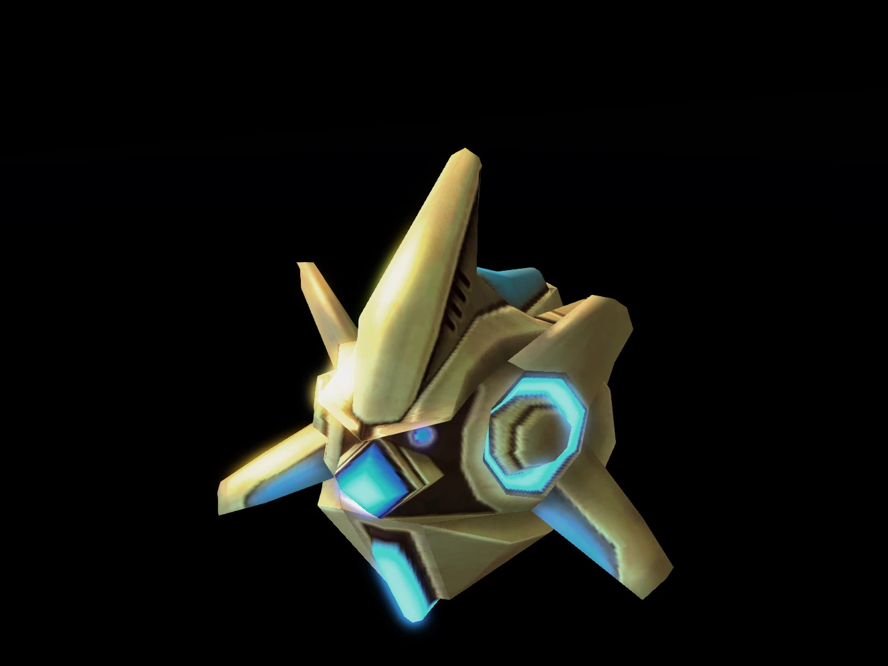
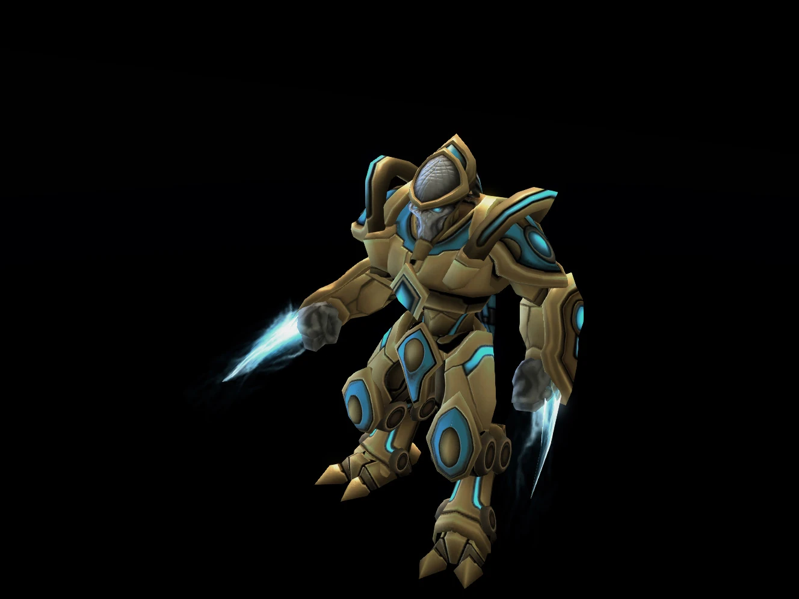
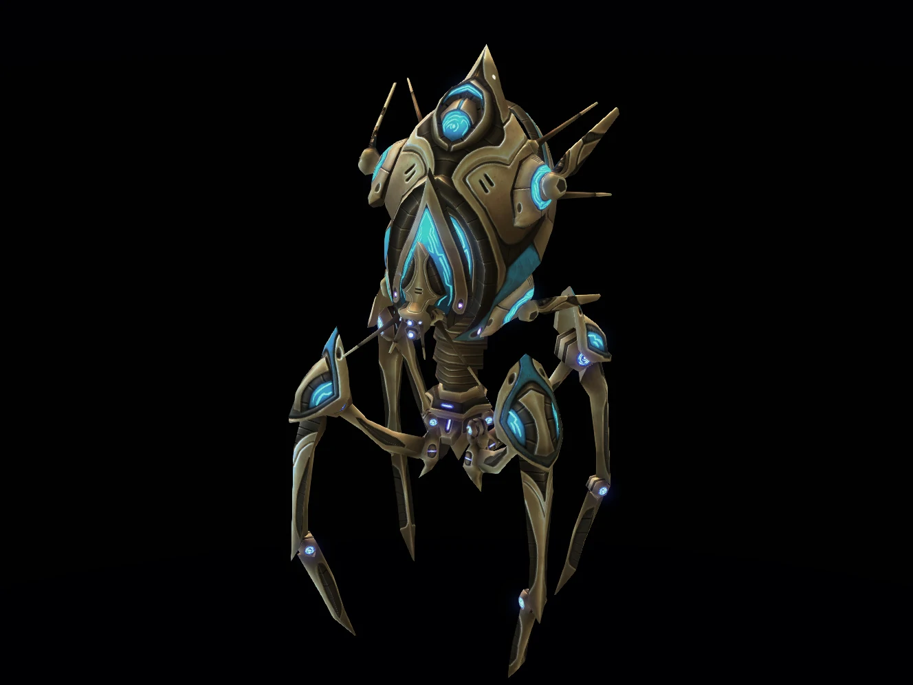
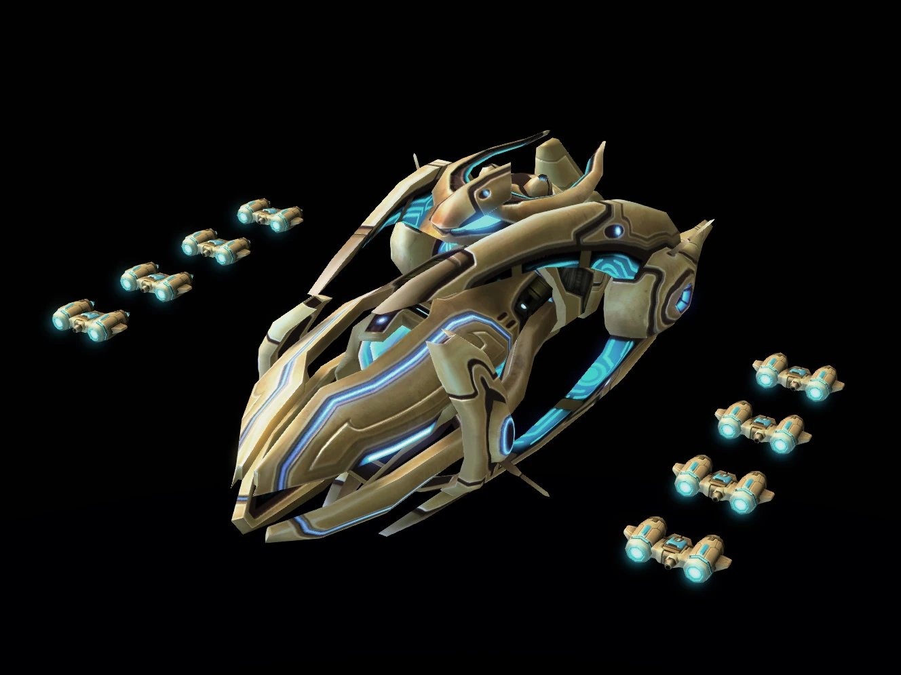
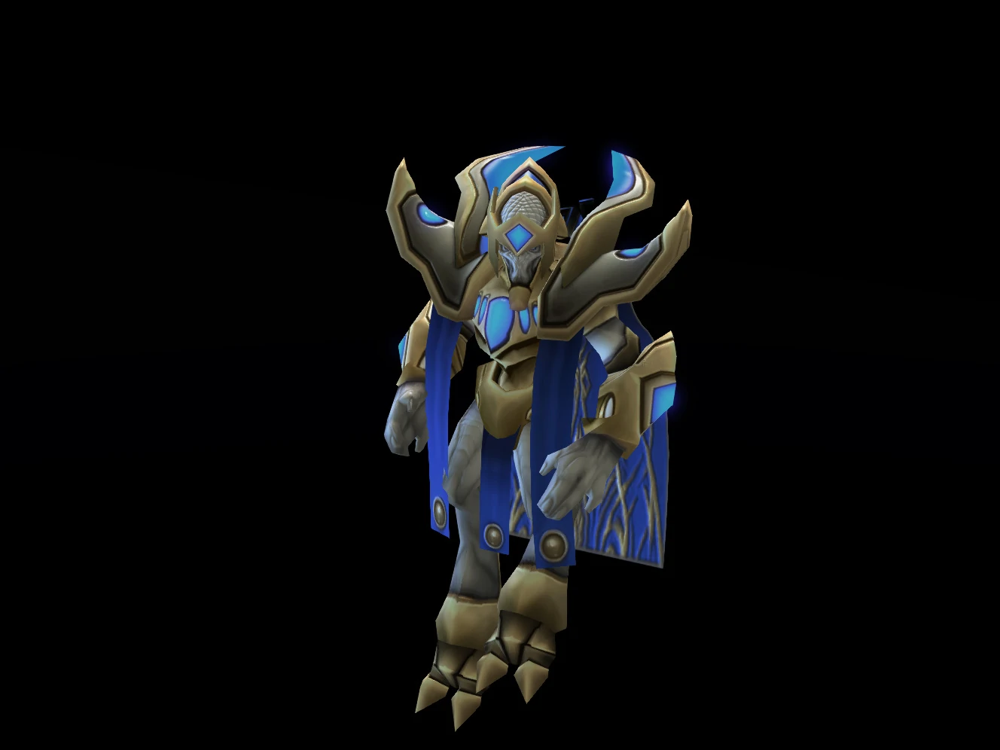
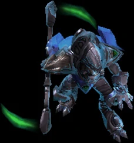
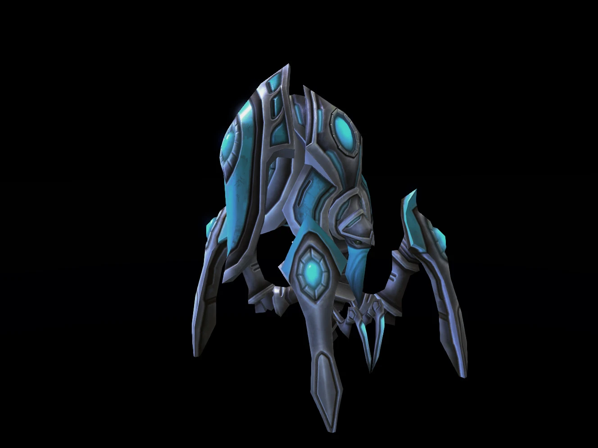
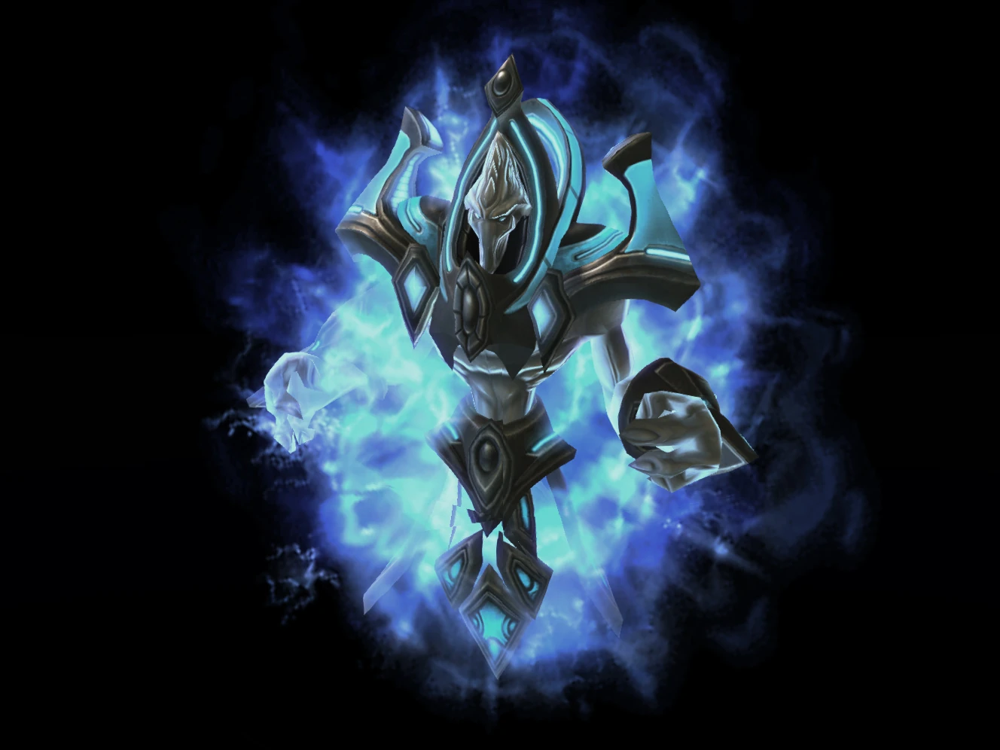

Évezredek óta az ősi és titokzatos protoss-ok uralták és védték a galaxis azon részét ahol éltek. Az egyes protoss harcosok felülmúlhatatlan képességekkel és bátorsággal rendelkeznek, amelyet a technológiájuk és a félelmetes pszionikus erőerejük kombinációja nagymértékben növel.
<<<<<<< Updated upstream-Idővel újratöltődő pajzsú egységek
-Erős egyedi egységek mint a Colossus és a Carrier
-Wrap Gate technológia egységek létrehozásához
| Icon | Egységnév | Egység leírás |
|---|
|  | Probe | A probe-ok a protoss-ok alapvető nyersanyag gyűjtő egységei. Ők gyártják és telepítik a warp-beacon-öket is, amik lehetővé teszik, hogy épületeiket az Aiur-ról távoli bolygókra teleportálják. |
|  | Zealot | Páratlan harcosok a csatatéren a zealot-ok. Több évtizedes intenzív kiképzésen vesznek részt, hogy tökéletesítsék harci képességeiket. Jellegzetes fegyverük a psi-blade, amit saját pszionikus energiájukkal formálnak. |
|  | Colossus | A colossuscolossus a protoss terror végső fegyvere. Toronyszerű robotikus építményként pusztító lézersugárral semmisít meg minden élőlényt maga előtt. Nem okoznak neki gondot a terep nehézségei sem. Négy lábon járva átlép minden akadályt. |
|  | Carrier | A carrier a protoss-ok legerőseb nehéz légi egysége. Ezek a pompás űrhajók arról híresek, hogy reményt ébresztenek a templar-ok szívében - vagy félelmet az ellenségeikben. Gyors interceptor-okkal felfegyverkezve félelmetes erőt képviselnek a csatatéren.(Az interceptor egy kis, autonóm repülő egység, amely a protoss carrier támadó képességeit biztosítja.) |
|  | High templar | A high templar-ok a protoss faj legtiszteltebb és legismertebb tagjai. Tapasztalt, vetereán zelot-okból lehetnek csak high templar-ok, akik miután magukra öltik palástjukat, félreteszik a zelot-ok örjöngő dühét és ha lehet, elkerülik a közvetlen harcot. Ehelyett hatalmas pszionikus képességeiket arra használják, hogy segítsék a többi egységet. |
|  | Dark templar | A nezarim, vagy másnéven a dark templar (ahogy a kívülállók ismerik őket), egy protoss törzs, akik kerülik a Khalát. A dark templar elnevezés onnan ered, hogy pszihonikus erejüket nem a Khala fényéből nyerik, hanem a Void-ból. Egy kitaszított törzset formálnak és a legnagyobb erősségük a rejtőzködés. |
|  | Stalker | A dark templarok fejlesztették ki a stalker-t. Ez egy harci gépezet, amelyet egy sötét harcos fémtestbe olvasztott árny-eszenciája irányít. Azok a Nerazim-ok, akik a stalker-eket irányítják, önként mennek keresztül ezen a folyamaton. Ez magában foglal egy, a Void energiák által működtetett rituálét, amely az árny-esszenciájukat a gépbe olvasztja. Ez természetfeletti kontrollt biztosít számukra az új testük felett. A folyamatot nem lehet visszafordítani. |
|  | Archon | Míg a high templar és a dark templar kétségtelenül olyan erők, amelyekkel számolni kell, van egy igazán nagyszerű harcos, aki szó szerint mindkettőjük felett áll. Amikor két, bármilyen típusú templar egyesül, képesek arra, hogy egy úgynevezett arkhon-t alkossanak. Nem meglepő, hogy az archon-ok elsöprő erejének forrása, vagy a kialakulásuk természete rejtély a nyilvánosság számára. |